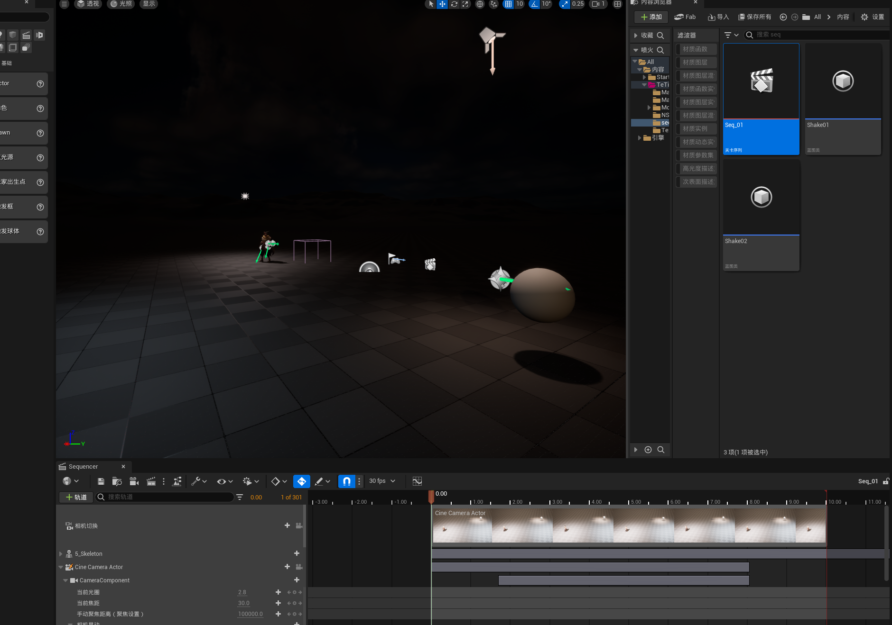
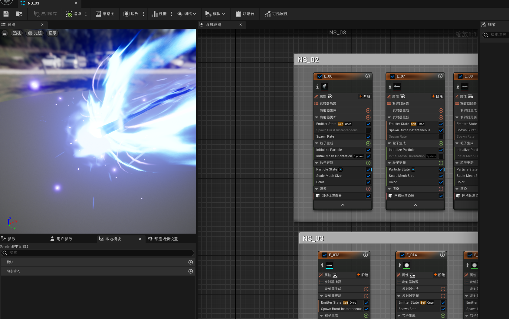

设计目标
通过冰晶几何形态和碎裂节奏表达冻结感，同时保证技能范围清晰可读。
GAME VFX · UNITY
以冰晶生长、冻结与碎裂为核心语言的冰系技能特效，强调形状变化和冷色层次。


视频文件：assets/videos/project-ice-demo.mp4
通过冰晶几何形态和碎裂节奏表达冻结感，同时保证技能范围清晰可读。
拆分预警、主体爆发、残留三个阶段，保证技能信息清晰并突出核心打击点。
使用粒子系统、材质动画、序列帧、扭曲和灯光配合，并根据镜头距离控制细节密度。
说明这一版中最满意的部分，以及下一版准备优化的节奏、颜色、性能或辨识度。